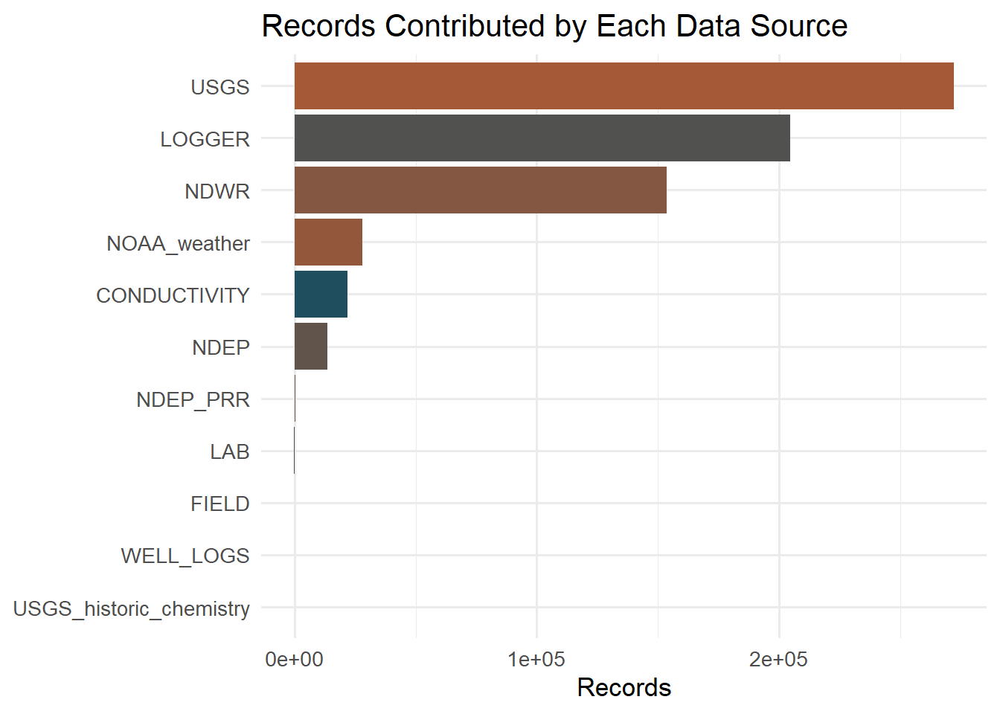
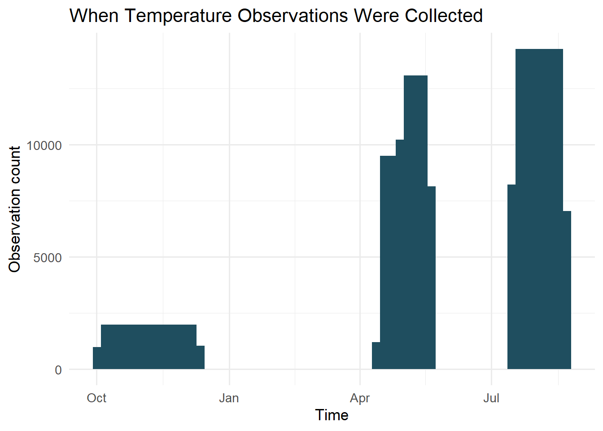

Underneath every chart on this page sits one normalized relational database, built so that a regulatory chemistry record from the 1970s, a lab result from last month, and a temperature reading logged sixty seconds ago all live in the same structure and can be queried together. The backbone of that structure is a small set of core tables: Locations for every spatial reference point, Sampling_Events for the discrete visits or deployments that generate data, Samples for the physical specimens collected during those events, and a family of observation tables (Field_Measurements, Lab_Analyses, Temperature_Observations, Conductivity_Observations, Water_Level_Observations, Isotope_Analyses) that each attach to a sample, a location, or a well through explicit foreign keys. That design enforces two things automatically: nothing gets inserted without a real spatial and temporal anchor, and time-series data is strictly append-only, so a logger’s history is never silently overwritten by a later download of the same file.
Six distinct kinds of source currently feed that structure, each with its own ingestion script and its own quirks: NDEP’s long-running regulatory chemistry program, targeted field sampling campaigns, laboratory analyses (including isotopes), continuous temperature and electrical-conductivity loggers, USGS discharge and historic water-quality records, and NOAA weather observations, with EXIF-tagged field photographs and scanned NDWR well-completion logs rounding out the picture. Each of those sources differs in how often it reports, how it is structured on arrival, and what it is actually good for scientifically; folding all of them into one schema is what makes it possible to ask a question that spans several of them at once, rather than treating each as its own isolated archive.

Total records contributed by each ingested data source (log scale would flatten this further; shown here on a linear scale to make the relative scale of continuous sensors versus discrete chemistry explicit).
The imbalance in that chart is expected, not a flaw: continuous instruments like USGS discharge gauges, the new conductivity logger, and temperature loggers generate orders of magnitude more rows than a chemistry program that samples a well a few times a year ever could, simply because they report every few minutes rather than every few months. The system’s value comes from holding both kinds of record side by side, not from any one source dominating the count.
Growth in this system happens in discrete jumps rather than a smooth trickle, because that is how the underlying fieldwork actually happens: a field campaign, a regulatory data drop, or a temperature- or conductivity-logger download each shows up as a step in the record count, not a gradual accumulation. Reading those jumps against the calendar (below, for the temperature record specifically) tells you almost as much about how this system is monitored as it does about the system itself: dense clusters mark active deployment and campaign periods, and the gaps between them mark when nothing was actively being measured. That distinction matters when it’s time to model these data downstream, because a period with no monitoring should never be mistaken for a period with no change in the underlying system.

Distribution of temperature-logger observations over time; clustering reflects real deployment history, not measurement gaps in an otherwise continuous record.
For a system-wide view of that same idea across every source at once, not just temperature, see the data availability chart on the Overview page, which shows the earliest and latest dated record for each source side by side. Reading the two together makes a pattern visible that neither chart shows on its own: this project has recently layered a dense, high-frequency instrument network on top of a much sparser multi-decade chemistry and discharge record, and a large part of the analytical work ahead is about bridging that gap credibly rather than pretending it isn’t there.
The map below shows every well and named field location currently in the database with a resolved coordinate, colored by role. Most wells still show as role “unknown”; role has only been confirmed so far for wells that appear explicitly in Ormat’s own production/injection flow diagram (Dhakal et al. 2025), and confirming the rest is ongoing work, not an oversight. Springs, seeps, and other named sampling locations are shown in their own layer, toggleable independently of the wells. Two more layers show the physical instrument network itself: every temperature logger (amber dots) and every conductivity logger (hollow rust rings). At SBRR, a temperature and a conductivity logger sit at the same coordinate, so a filled amber dot inside a rust ring at that point marks real co-location, not a rendering coincidence.
A running principle throughout this system is that no dataset becomes
“real” (queryable, mappable, usable in a model) until a user has
confirmed it belongs where the automated pipeline thinks it does. The
NDEP Public Records Request workflow is the clearest example: chemistry
extracted from scanned NDEP lab-report PDFs is parsed automatically, but
it lands only in a staging table, never in the core schema directly.
Promotion into real Samples and Lab_Analyses
rows happens through a second, separate, user-reviewed step that
resolves each station name against a real-world coordinate, drawn
preferentially from the Nevada Bureau of Mines and Geology’s statewide
geothermal-wells dataset when an exact name match exists there. As of
this writing, four of thirteen staged station names have cleared that
bar and been promoted; the rest remain intentionally staged rather than
guessed, because in a handful of cases, most notably a station recorded
only as “Herz (Deep)”, multiple independent sources disagree with each
other by more than a kilometer, and picking one without better evidence
would quietly introduce a wrong answer into every later analysis. The
same philosophy governs how well identities are resolved more broadly: a
nearby coordinate is a lead, not a confirmation, and only a converging
combination of location, ownership, and construction date is treated as
proof.
Continuous temperature and conductivity monitoring are both fully integrated and actively growing; laboratory chemistry ingestion, well-network resolution, and the well-log OCR pipeline are all active and expanding week to week. In operational mode, none of this is a fixed snapshot: the database is a live, incrementally-growing representation of the field, and every chart on this page reflects whatever the most recent pipeline run actually found.